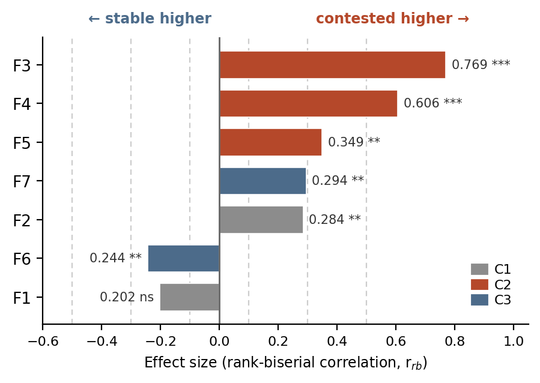

Do edit wars leave a trace in the text - before anyone flags them? A matched-pairs study across English and German Wikipedia asking whether contested articles simply read differently from stable ones, using nothing but linguistic features.
Can linguistic and structural features of Wikipedia articles
predict whether an article is editorially contested - and do these
patterns differ between English and German?
We compared contested articles (carrying an active
{{POV}} / {{Disputed}} /
Vorlage:Neutralität template) against
stable Featured/Excellent articles, matched on topic,
word count, article age, and lexical diversity - so any signal we
found couldn't just be explained by "contested articles are about
messier topics."
I designed and built the entire bilingual data-collection pipeline myself: Wikipedia API querying, wikitext cleaning, revision-history scanning, and topic classification via Wikimedia's Lift Wing outlink model. On top of that, the team engineered 7 linguistic features across 3 theoretical layers:
I implemented and validated the same-topic nearest-neighbour matching algorithm myself, ran a six-experiment pilot study that shaped the final methodology, and collected the final datasets: 143 matched English pairs (from 200 contested / 400 stable candidates) and 142 matched German pairs (from 195 contested candidates). All matches passed a strict covariate-balance check (SMD < 0.1 on word count and article age).

Feature significance was tested with Wilcoxon signed-rank tests plus Holm correction for multiple comparisons; the classifier was a bootstrap-CI logistic regression, validated under 5-fold cross-validation and a separate robustness re-run with alternate feature definitions.


Contested articles carry measurably more hedging, affective stance, and attribution-bias language - and consistently fewer reverts don't explain it away, since the matching controlled for that. The German sub-analysis (142 pairs) told a related but weaker story: macro-F1 improved from 0.584 to 0.624 once we adapted features for German syntax, with attribution bias (F4) standing out as the most cross-lingually robust signal of the seven.

This reads more like a research paper than a class exercise: a genuine matched-pairs causal design, Holm-corrected significance testing, and a cross-lingual comparison most student projects skip because it doubles the scraping and modeling work. My specific contribution was the full data pipeline and matching algorithm, the six-experiment pilot that shaped the final design, and the proposal - discussed in the paper's conclusion - that this kind of contestation signal could double as an LLM pretraining-data filter.
In the robustness check (above), we re-ran the full model on an alternate feature definition and a filtered subsample (k=3.0) - the coefficient directions and relative magnitudes barely moved. That's the kind of boring, unglamorous check that's easy to skip and exactly why the result is trustworthy.